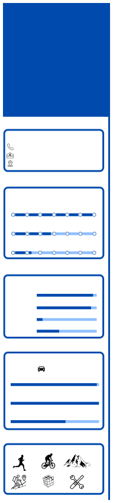

Valentin LILLIE
COORDONNEES
LANGUES
• Français : Langue maternelle
• Anglais :
• Allemand :
LANGAGES INFORMATIQUE
• Python :
• OCaml :
• SQL :
• C :
AUTRES COMPETENCES
• Permis B
• Curiosité :
• Volonté d’apprendre :
• Gestion du temps :
LOISIRS
STAGE OUVRIER
PROFIL
Dans le cadre des mes études, je recherche un stage ouvrier de six semaines pour découvrir la vie en entreprise et apprendre différents métiers. J’ai déjà travaillé dans de petites structures, ce qui m’a permis de développer rigueur, ponctualité et adaptabilité. J’aime explorer de nouveaux environnements professionnels et comprendre leur fonctionnement. Ce stage représente une opportunité d’approfondir mes acquis et de participer activement au travail au sein d’une organisation plus structurée.
PARCOURS ACADEMIQUE
Sept-2025 - Aujourd’hui : ENSEEIHT, Toulouse, France
Filière Electronique Energie Electrique et Automatique
Sept-2023 - Juil-2025 : Lycée Claude Gellée, Epinal, France
Classe préparatoire aux grandes écoles
Filière Maths Physique
Sept-2020 - Juil-2023 : Lycée La Haie Griselle, Gérardmer, France
Baccalauréat Général Mention Très Bien - Score : 17.1/20
Spécialités : Maths & Physique
EXPERIENCES PROFESSIONNELLES
Juil - Août (2025/2024/2023/2022):
Poste :
Monteur de Chapiteaux (en CDD)
Taches :
- Déplacements frequents
- Porter des charges Lourdes
- Préparer les pieces pour les chantiers
- Travaille en équipe (≈10 peronnes)
Apport à l’entreprise :
- Contribution à l’efficacité de l’équipe.
- Autonomie : capacité à résoudre des problèmes seul pour ne pas ralentir l’équipe.
Entreprise :
Lalevée Et Simon SARL, Corcieux, France
Expérience Acquise :
- Communication avec des personnes parlant peu français, capacité à s’adapter et collaborer efficacement.
- Gestion de conflits
- Adaptabilité : s’adapter rapidement aux contraintes, notamment météorologiques.
- Gestion physique et endurance : manipulation d’éléments lourds et travail en extérieur.
 LinkedIn
LinkedIn